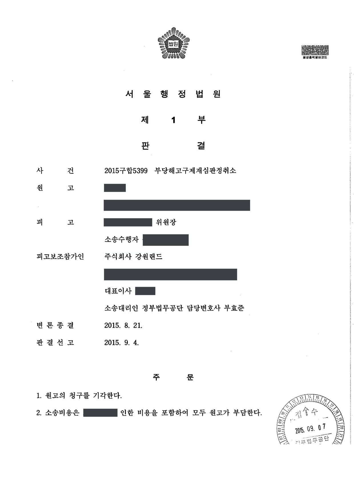
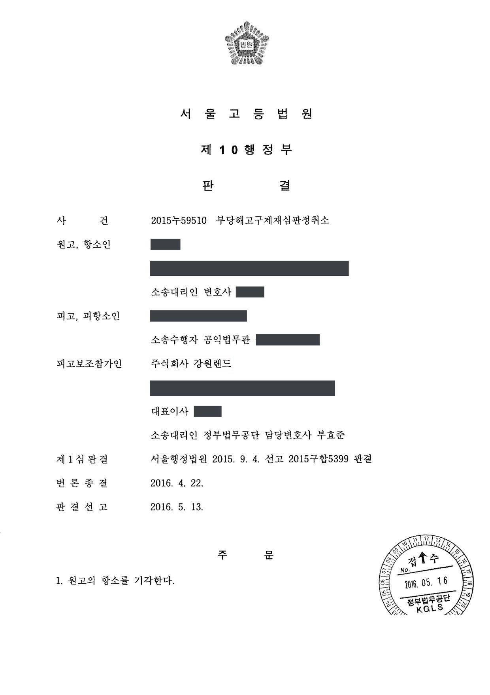
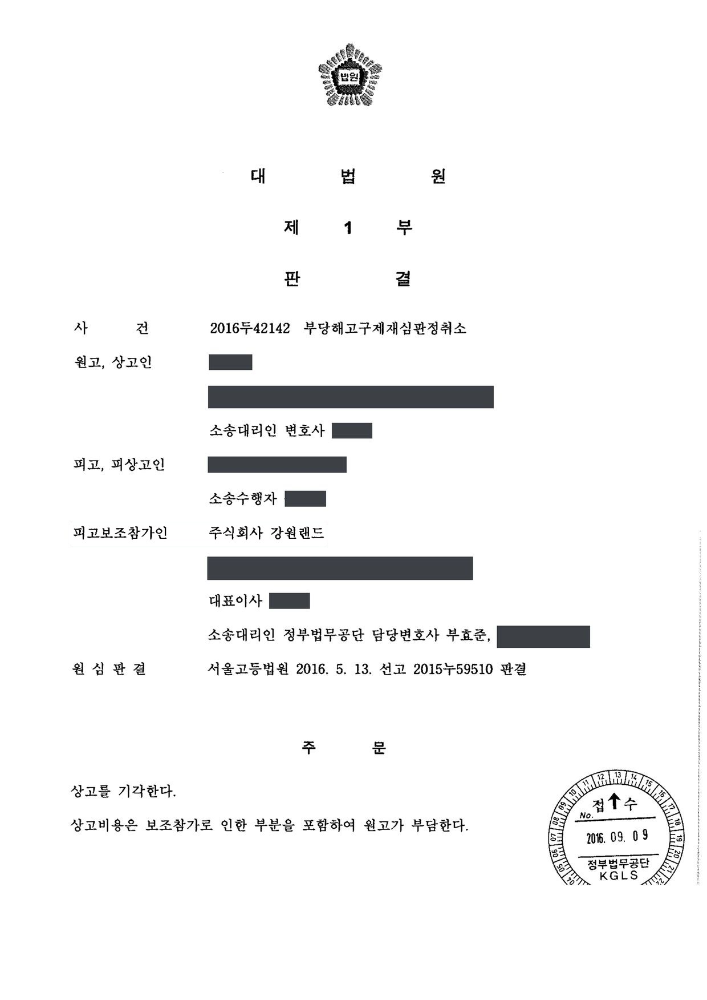

공기업 근로자 부당해고 구제재심판정 취소소송 (1·2·3심)
서울행정법원 2015구합5399 · 서울고등법원 2015누59510 · 대법원 2016두42142 · 담당변호사 부효준
판결문



사건의 요지
경력직 채용 당시 제출한 자격증이 위조된 것으로 드러나 해고된 근로자가 부당해고 구제재심판정의 취소를 구한 사건으로, 징계사유의 존재와 징계시효, 해고의 정당성이 다투어졌습니다. 보조참가한 사용자 측을 대리했습니다.
사건의 주요 내용
참가인은 호텔 등을 운영하는 공기업으로, 2002년 12월 호텔 조리 경력직 채용공고('조리사 자격증 소지자 우대')를 냈습니다. 원고는 2003년 1월 입사지원서에 1995년 한식조리기능사 자격을 취득하였다고 적고 지방자치단체장 명의로 발급된 것으로 된 조리사 면허증을 제출하여 2003년 3월 호텔 조리팀 경력직으로 채용되었습니다.
2013년 12월 다른 직원의 자격증 위조 제보를 계기로 참가인이 조리 부문 직원 256명 전체의 국가기술자격 취득 여부를 조회한 결과 원고만 '확인 불가'로 회신되었고, 면허증 발급기관도 자료가 없다고 회신하였습니다. 참가인이 약 2개월간 여러 차례 소명자료 제출을 요구하였으나 원고는 제출하지 않았고, 면허증에 찍힌 관인은 1980년 폐기된 직인과 유사하였습니다. 참가인은 2014년 8월 징계위원회를 거쳐 인사규정의 채용결격사유와 직권면직사유에 해당한다는 이유로 원고를 면직하였습니다.
원고의 부당해고 구제신청은 지방노동위원회와 중앙노동위원회에서 모두 받아들여지지 않았고, 원고는 재심판정의 취소를 구하는 소송을 제기하였습니다. 부효준 변호사는 사용자인 참가인을 피고보조참가인으로서 대리하여 1심부터 상고심까지 수행하였습니다.
원고의 주장
- 입사 지원 당시 적법하게 발급된 것이라고 믿고 조리사 면허증을 제출하였을 뿐 위조한 사실이 없고 참가인을 기망할 의도도 없었다.
- 입사구비서류가 허위이면 해고할 수 있다는 규정이 있더라도, 11년간 조리팀에서 성실히 근무한 점을 고려하지 않고 자격증이 허위라는 이유만으로 해고한 것은 신의칙에 위반되고 재량권을 일탈·남용한 것이다.
- (항소심) 면허증이 허위라 하더라도 원고가 위조한 것이 아니고 허위임을 인식하지 못한 채 제출하였으므로 처분사유가 없으며, 징계사유 발생일로부터 2년의 징계시효가 완성된 뒤에 이루어진 징계여서 위법하다.
부효준 변호사의 주장
- 국가기술자격 검정기관과 면허 발급기관의 회신, 폐기된 관인과 유사한 날인, 취득 경위에 관한 구체적 진술의 부재에 비추어 면허증은 허위이고, 법령상 필기·실기시험에 합격해야 취득할 수 있는 자격을 언제 어떻게 취득하였는지 답하지 못하는 이상 원고에게 적어도 미필적 인식이 있었다고 주장하였습니다.
- 인사규정은 자격증 사본 등 입사구비서류에 허위사실을 기재한 자를 채용결격사유와 직권면직사유로 정하고 있고, 조리사로 채용된 이상 자격증 소지 여부는 사소한 사항이 아니며, 입사지원서에는 허위기재가 밝혀지면 해고에 이의가 없다는 서약도 있었고, 같은 사유로 다른 직원도 면직되었으므로 해고가 원고에게만 불리한 것이 아니라고 반박하였습니다.
- 11년간 발각되지 않은 것은 부정이 장기간 은폐되었다는 의미일 뿐 하자가 치유되는 것이 아니고, 허위 서류로 입사한 근로자가 회사의 잘못 없이 징계시효가 지난 뒤 비로소 발각된 경우 시효 완성을 주장하는 것은 신의칙에 위반된다(대법원 1995. 3. 10. 선고 94다14650 판결)고 주장하였습니다.
법원의 판단
1심은 자격 검정기관이 다른 직원 255명은 '보유'로 확인하면서 원고만 '확인 불가'로 회신한 점, 발급기관도 자료가 없다고 회신한 점, 면허증의 관인이 1980년 폐기된 직인과 유사한 점, 원고가 취득 경위를 구체적으로 진술하지 못하는 점을 들어 면허증이 허위라고 인정하였습니다. 재량권 일탈·남용에 관하여는 이력서 허위기재를 징계해고사유로 삼은 취업규칙은 유효하다는 대법원 판례(1990. 12. 7. 선고 90다카23912 판결)를 전제로, 인사규정이 허위 기재를 채용과 근로관계 존속에 중대한 요소로 보고 있는 점, 원고에게 적어도 미필적 인식이 있었다고 보이는 점, 11년의 세월로 하자가 치유되지 않는 점, 같은 사유로 다른 직원도 면직된 점을 들어 해고가 정당하다고 보고 2015년 9월 청구를 받아들이지 않았습니다.
항소심은 1심 판결을 인용하면서, 원고가 위조에 직접 가담하였는지 또는 위조 사실을 인식하였는지와 무관하게 허위사실이 기재된 입사구비서류를 제출한 것이 분명한 이상 인사규정상 처분사유가 존재한다고 덧붙였습니다. 항소심에서 새로 제기된 징계시효 주장에 대하여는, 이 면직처분은 통상해고가 아니라 징계해고에 해당하여 시효가 일단 지난 것으로 볼 여지가 있다고 하면서도, 회사가 아무런 잘못 없이 징계사유를 알지 못하여 시효가 지난 뒤 허위기재를 알고 곧바로 징계한 경우 근로자가 시효 완성을 주장하는 것은 신의칙에 위반된다는 대법원 판례(1995. 3. 10. 선고 94다14650 판결)에 따라 이를 배척하고 2016년 5월 항소를 받아들이지 않았습니다.
대법원은 2016년 9월 상고이유가 상고심절차에 관한 특례법 제4조에 해당한다고 보아 심리불속행 판결로 상고심을 마무리하였고, 이로써 해고가 정당하다고 본 항소심 판결이 확정되었습니다.
즉, 원고가 참가인에게 허위사실이 기재된 입사구비서류를 제출하였음은 증거에 의하여 인정된다. 그렇다면, 원고가 조리사면허증의 위조에 직접 가담하였는지 혹은 위조 사실에 대하여 인식하였는지와 무관하게 원고가 허위사실이 기재된 입사구비서류를 참가인에게 제출하였음이 분명한 이상 참가인의 인사규정에 정한 처분사유는 존재한다고 봄이 타당하다. 따라서 이와 다른 전제에서 하는 원고의 위 주장은 받아들일 수 없다.
서울고등법원 2015누59510 판결 이유 '2. 가. 징계사유의 존부'
피용자가 회사에 입사할 당시 이력서에 자신의 채용 여부 등에 영향을 미칠 중요한 경력을 은폐, 허위의 경력을 기재하고 회사로서도 아무런 잘못이 없이 그러한 사실을 알지 못하여 징계권을 행사하지 못한 채 징계시효기간이 도과한 후에 이르러서야 비로소 피용자의 경력허위기재 사실을 알고서 곧바로 피용자에 대한 징계절차를 취하였음이 분명하다면, 위 피용자는 채용 당시부터 사용자에 대하여 그 채용 여부 등에 중요한 영향을 미칠 경력을 은폐하고 허위의 경력을 기재함으로써 사용자와 피용자 사이에 요구되는 신의칙상의 의무에 위배하여 근로계약을 체결한 자로서, 오히려 회사는 아무런 잘못이 없이 이러한 징계사유를 알지 못하여 징계시효기간을 도과하였음에도 불구하고 이를 이유로 자신에 대한 징계처분의 효력을 다툰다는 것은 보통인의 정의 관념에 비추어 볼 때 신의칙에 위반되어 허용될 수 없다 할 것이다(대법원 1995. 3. 10. 선고 94다14650 판결 참조).
서울고등법원 2015누59510 판결 이유 '2. 다. 징계시효기간 도과 주장에 대한 판단'
기업이 근로자를 고용함에 있어서 학력이나 경력 등을 기재한 이력서의 제출을 요구하는 것은 단순히 근로자의 근로능력을 평가하기 위하여서만이 아니라, 노사간의 신뢰의 형성과 기업질서의 유지를 위하여는 근로자의 지능과 상식, 경험, 기능, 교육정도, 정직성 및 직장에 대한 정착성과 적응성 등을 모두 고려한 전인격적인 판단을 거쳐 고용여부를 결정할 필요가 있기 때문에 그와 같은 판단의 자료로 삼기 위한 것이라고 할 터인데 이와 같은 목적으로 제출이 요구되는 이력서에 허위의 경력을 기재한다는 것은 그 자체가 그 근로자의 정직성에 대한 중요한 부정적인 요소가 됨은 물론, 기업이 고용하려고 하는 근로자들에 대한 전인격적인 판단을 그르치게 하는 것이므로 근로자가 채용될 때 제출한 이력서에 허위의 경력 등을 기재한 행위를 징계해고사유의 하나로 삼은 취업규칙은 그와 같은 허위사항의 기재가 작성자의 착오로 인한 것이라거나 그 내용이 극히 사소하여 그것을 징계해고사유로 삼는 것이 사회통념상 타당하지 않다는 등의 특별한 사정이 있는 경우까지 적용하지 않는 한 정당한 해고사유를 규정한 것으로 유효하다(대법원 1990. 12. 7. 선고 90다카23912 판결 참조).
서울행정법원 2015구합5399 판결 이유 '2. 라. 판단' 2) 재량 일탈·남용 여부 가) 부분
※ 판결 이유 가운데 이 사건의 판단 기준이 된 부분을 그대로 옮긴 것으로, 당사자 이름 등은 가렸습니다.
이 사건이 보여 주는 것
채용 때 제출한 자격증이나 경력이 허위인 경우, 근로자가 위조에 가담하였거나 허위임을 알았는지와 관계없이 '허위 서류 제출' 자체가 인사규정상 해고사유가 되고, 입사 후 오랜 기간 근무하였다는 사정이 그 하자를 치유하지 않는다는 점이 확인되었습니다. 특히 자격증 소지가 채용 조건과 직결된 직무에서는 신뢰 훼손이 중대하게 평가됩니다.
징계시효(통상 2년)는 사용자가 징계사유를 알 수 없었던 사정이 근로자의 허위기재에서 비롯된 경우 신의칙에 따라 그 주장이 제한될 수 있습니다. 다만 법원은 해고가 '징계해고'인지 '통상해고'인지를 통지서의 문언과 사용자의 소송상 주장까지 살펴 판단하므로, 사용자 측은 해고의 성질을 처음부터 일관되게 정리해 둘 필요가 있습니다.
비슷한 처분을 받으셨다면
행정처분은 처분이 있음을 안 날부터 90일 이내에 행정심판이나 취소소송으로 다투어야 하고, 기간이 지나면 돌이킬 수 없는 처분은 집행정지를 서둘러야 합니다. 처분서를 받은 날짜부터 확인해 드립니다.